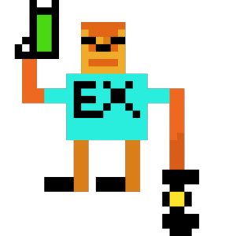
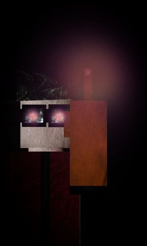

Mr.Johnathan is the main villain of EX-DRONES' main Campaign. He's being shown up as an Power Hungry, Manipulator and a Psychopath type of a villain.
Johnathans' Backstory
Mr.Johnathan was a top tier student in his academy. He was a scientist and a mechanic. His grades were A Graded. He was the type of kid that would say
that they want to make a better world and you would laugh right in front of them. But him? He was really optimistic, he always believed that there's a way to solve every problem,
he just needed to do the right tricks. He never believed in miracles, he believed in, if a person starts being creative, that's where the job is getting started.
Not long after he dropped off academy to start working on his own creations and inventions. He started programming a robot. A robot that would walk and bring him what he
would say so. After couple months, those months turned out to be years and he failed continiously. That's where the whole plan begun. He wrote down a whole code
and drew a Drone. An armored Drone with lasers! The project failed just like the rest ones, but he never let down. He could feel each time he was failing, that he
was getting closer and closer to success, until....the 10th Drone. At first he couldn't believe he did something right but it didn't took him enough to realize
that he had to give it a name. X-DRONES? Seemed a bit basic with all the movies he would watch so, EX-DRONES it is! wuolah!
Johnathan was happy once. The last couple months after his successful invention he realized that he was the only one that did it right, that he needed no partner
to do the job done. His heart was already filled with hatred. With no one caring about him, it was a piece of cake for him to start multiplying the EX-DRONES into
a whole army, conquering the world for his own likes. On his own. Johnathan continued upgrading from Drones to Turrets, and when it was the time, he started
the Project "EX-DRONES" causing nothing but chaos. After that, silence. Johnathan went missing and no one has seen him till today..
Meet the EX-Guy 
There are not many details for EX-Guy, in fact he's the only person that knows himself better than anyone else (ironic right..?). There is a very
small information about him such as,
A simple guy you might think, but this is where you're wrong..really wrong. EX-GUY hasn't got his nickname just like that out of the nowhere. He got his name
by butchering and eliminating all those DRONES non-stop. His legacy goes on..
His real name is yet unknown and his first appearence was recorded in 2045, when the pandemic and crisis of EX-DRONES was just getting started.
Since then, he's still out there somewhere, fighting against the DRONES.
Meet David Angel Stewart 
David Stewart also known simply as "Angel", used to be a family man but in 2020 everything from his personal life would change..
David was born in Australia and stayed there until his 10th Birthday (2033), you can tell he had that Australian accent.
He lost his family at a very young age of (when he was only just 6), mother and father. He also had an older sister but she's been missing for years now.
His father died during a flight failure, after the incidence his mother started drinking heavily alcohol and was diagnosed with bipolar behavior and heavy depression, after a month she died by overdosing.
In 2033 he moved with his grandparents to Romania, leaving his sad and dark past behind.
Soon after David had his chance he flew with a Vought F4U Corsair succesfully, just to make his father's wish of flying with a plane come true.
He did paid respects for his father of course. You could see David flying around with that Vought F4U up in the sky. A long gone friend gave him the nickname "Angel" when he was seeing him
flying with the plane directly to the moon at one night.
David was living with his grandpa and grandma until 2020, when the DRONES & SOLDIERS came and murdered them. Thankfully, David managed to counter-strike but it was already late for his grandparents.
Their last words were "We are long gone now, but you can make the difference. Dear Angel". He doens't want to talk about it.
Meet Kyle
A clumsy teen i hear you say? Well, yeah sure he is but he knows what he's doing..(sometimes).
He's not an ordinary teen, an revolutionary anarchic kid who enjoys nothing except of causing chaos....and listening Heavy Metal music. For many civillians the thing that Mr.Johnathan started is a
War. For him, it's just an opportunity.